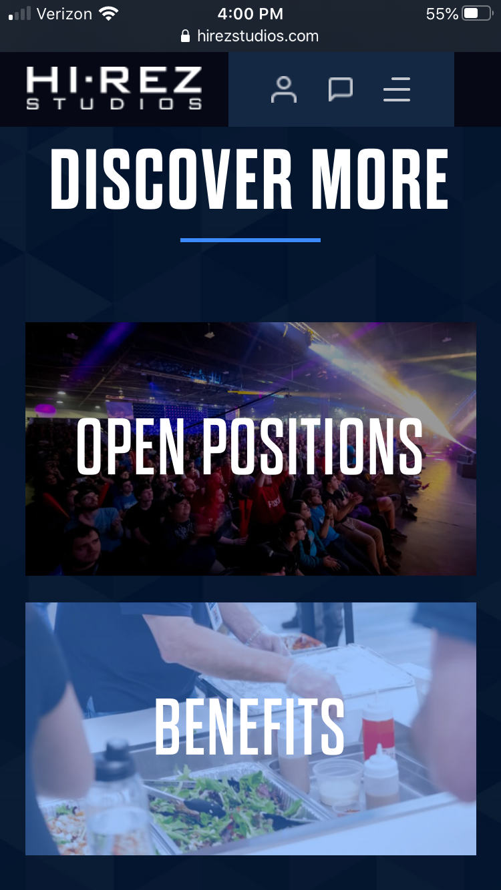
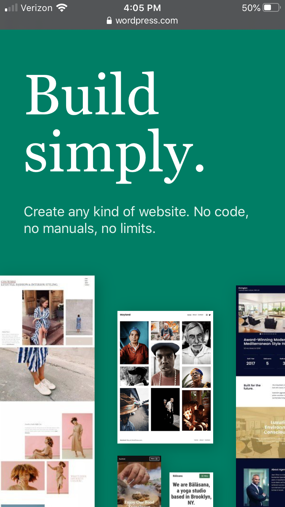
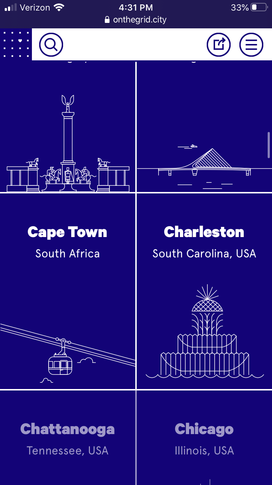

Visual Hierarchy
Hi-Rez Studios
hirezstudios.com This website uses visual hierarchy in a way that shows what they want the user to feel as they browse through the different links where visuals are shown. This way, the user can get a better understanding of what it might be like. It makes it more enticing to click on as well.
White Space and Clean Design
Wordpress
wordpress.com Wordpress uses white space to make this page feel less claustrophobic. It allows the user to feel like there isn't too much going on. They can focus their attention where they want to without distraction.
PARC: Contrast
On The Grid
onthegrid.city The contrast for this mobile version of On The Grid is pretty simple with just the blue background with white text. It is done in a way that is appealing to the eye. The white fades in as the user scrolls down.